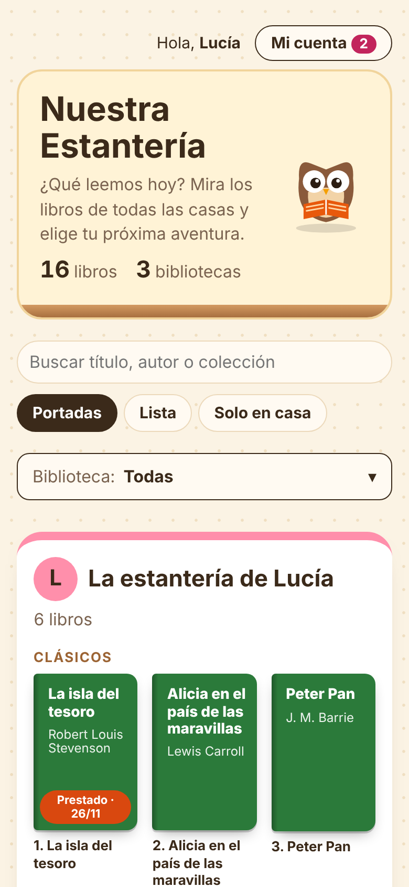
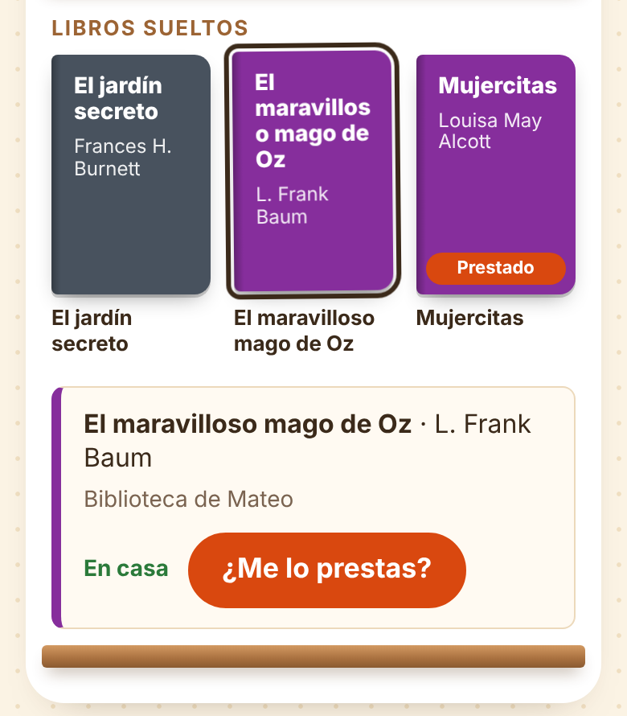

Guía para lectores y lectoras
Todos los libros de nuestras casas,
en un solo sitio.
Imagina una estantería gigante con los libros de todas las casas de tus amigos y amigas.
Cada familia pone en ella los libros que tiene en casa. Así puedes ver qué libros tienen los demás.
Y lo mejor: ¡os los podéis prestar!
Si ves un libro que te gusta, tu familia se lo puede pedir prestado a la familia que lo tiene. Cuando lo termines, lo devuelves para que lo lea otra persona.
Es como una biblioteca, pero hecha entre todos.

Abre la página de la estantería en el móvil, la tablet o el ordenador. Pide la dirección a tu familia.
Verás una tarjeta de color por cada casa: «La estantería de…».
Los libros de la misma colección están juntos, en su balda de madera.
¿Buscas uno? Escribe el título o el nombre de quien lo escribió en el buscador.
Truco: pulsa Solo en casa para ver solo los libros que se pueden pedir ahora mismo.
Toca la portada de un libro y se abre una tarjeta con:
Un resumen cortito para saber de qué va.
Cuántas páginas tiene y en qué casa está.
Si está en casa o si está prestado.

Si en la portada ves Prestado · 26/11, otra familia lo está leyendo. Volverá hacia esa fecha.
4Esto lo hacéis con una persona adulta de tu familia. Ella tiene la cuenta para entrar en Entrar · familias.
Elegís el libro y pulsáis ¿Me lo prestas?
La familia que lo tiene recibe un aviso y dice «Aceptar».
Os dan el libro: en el cole, en el parque o en casa.
Vuestra persona adulta pulsa «Lo tenemos». ¡Ya es tuyo durante 3 semanas!
¿Está prestado? Pulsad Avísame cuando vuelva y os llegará un aviso cuando esté libre.
Un libro prestado es un tesoro de otra persona. Trátalo como si fuera tuyo... ¡o mejor!
Usa un marcapáginas. No dobles las esquinas.
Lejos de la comida, el agua y el barro.
Llévalo en una bolsa para que no se moje ni se doble.
No pintes ni escribas dentro.
¿Lo has terminado? Devuélvelo a tiempo.
Tu familia pulsa «Ya lo hemos devuelto» y la otra familia confirma «Ya lo tengo de vuelta». ¿Necesitas más tiempo? Se pueden pedir 2 semanas más.
Si se rompe o se pierde, no pasa nada por decirlo: cuéntaselo a tu familia enseguida.